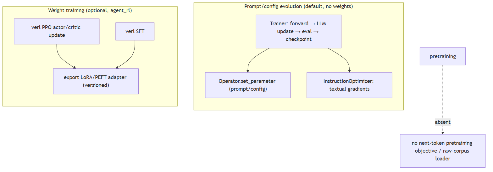
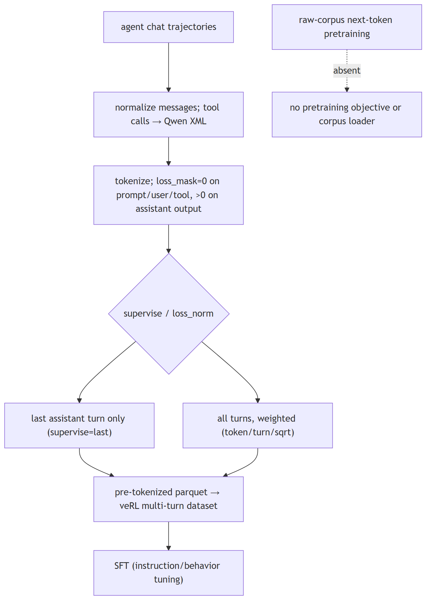
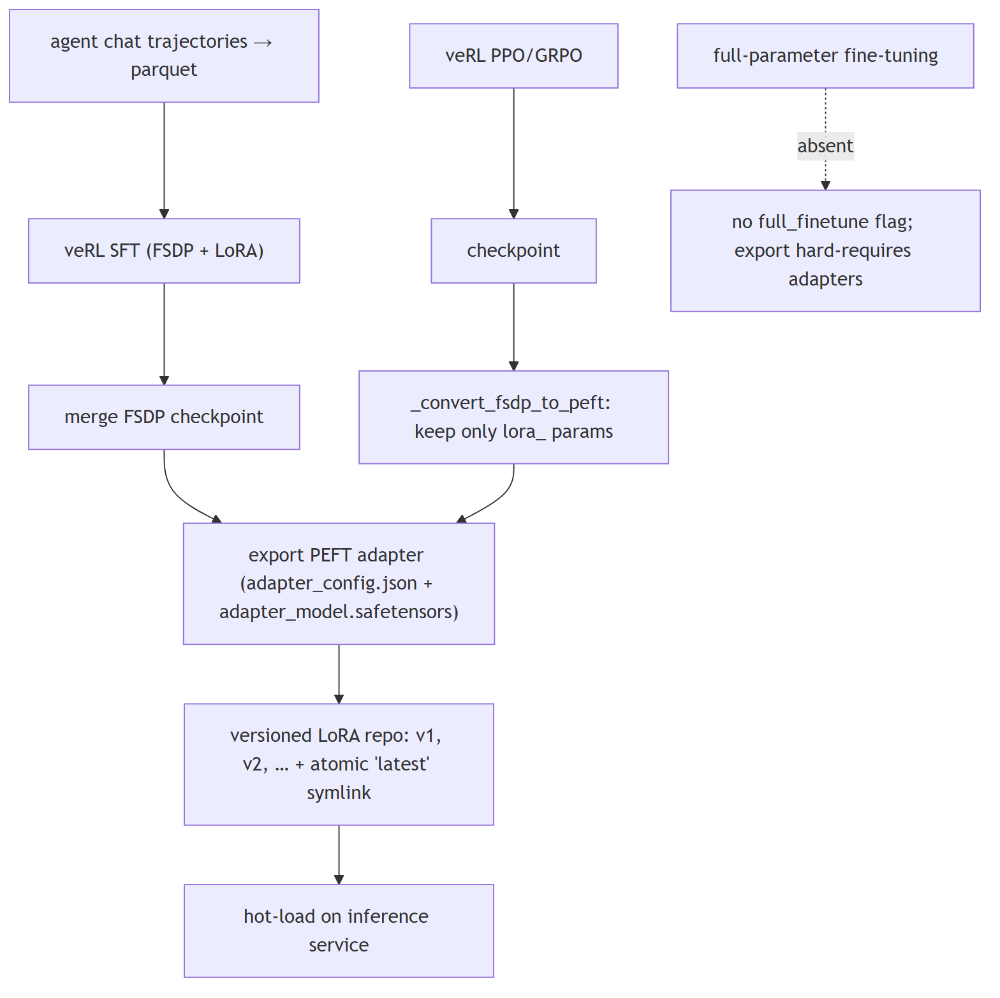
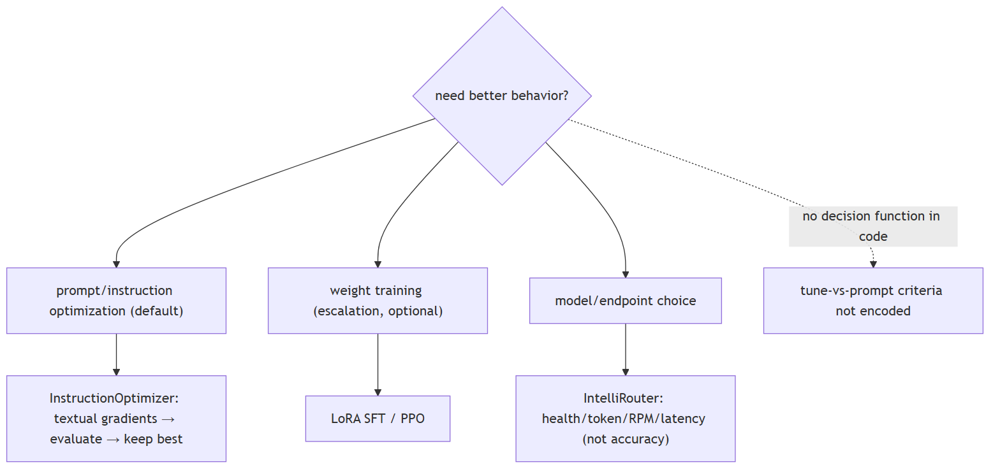
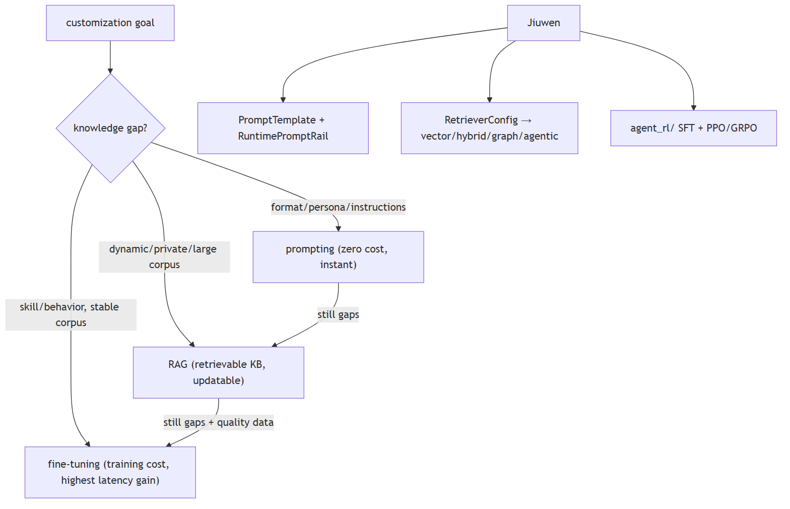
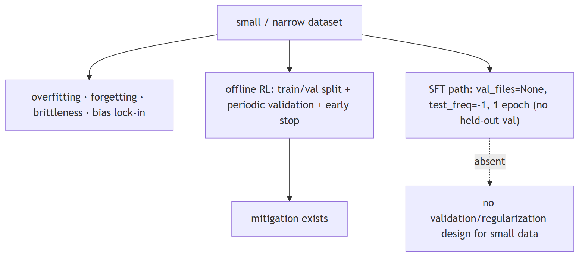
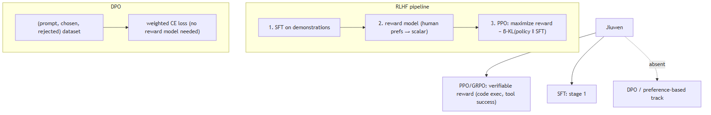

Fine-tuning and customization
1. What's the difference between pretraining and fine-tuning
Compare basic
TL;DR. Pretraining learns general language structure from a huge unlabeled corpus (self-supervised); fine-tuning adapts a pretrained model to a task with labeled data. Here 'evolution' optimizes prompts, not weights.
Key points.
- Pretraining: self-supervised, general, expensive.
- Fine-tuning: task adaptation with labels.
- Jiuwen's default evolution tunes prompts, not weights.
Concept. Pretraining learns general language structure from a huge unlabeled corpus with a self-supervised objective (next-token or masked-token); it is expensive and done once per base model. Fine-tuning adapts a pretrained model to a task/domain/behavior on a much smaller labeled or demonstration dataset, updating some or all weights. Instruction tuning is a specific kind of fine-tuning on instruction→response pairs.

In Jiuwen. Two distinct things live here. The default evolution path does not train weights: the evolving trainer runs evaluate, LLM-generated update, validate, and checkpoint, then writes back operators and parameters (prompts, configs) using textual gradients — prompt optimization. Weight training happens only in separate SFT/RL trainers via LoRA adapters.
Under the hood
Implementation
Two distinct things live here. The default "evolution" path does not train weights: agent_evolving.Trainer runs evaluate → LLM-generated update → validate → checkpoint and writes back operators/parameters (system/user prompts, configs) via Operator.set_parameter using "textual gradients" — prompt optimization, not gradient descent. rsi/ and auto_harness evolve harness code/prompt sections. Separately, the optional agent_evolving/agent_rl/ subsystem genuinely trains weights with veRL (PPO actor/critic updates, SFT) and exports LoRA/PEFT adapters. The training subsystems start from an existing base model rather than pretraining from scratch.
Code anchors
| Code anchor | What it points to |
|---|---|
agent-core/openjiuwen/agent_evolving/trainer/trainer.py:145 |
train() loop; :359 op.set_parameter(target, value) |
agent-core/openjiuwen/agent_evolving/optimizer/llm_call/instruction_optimizer.py:30 |
prompt rewrite via textual gradients |
agent-core/openjiuwen/rsi/__init__.py:2 |
recursive self-improvement over harness/prompt/code |
agent-core/openjiuwen/agent_evolving/agent_rl/rl_trainer/ppo_step.py:147 |
update_actor / :145 update_critic (real PPO) |
agent-core/openjiuwen/agent_evolving/agent_rl/online/backends/sft/trainer.py:211 |
async SFT producing a LoRA |
agent-core/openjiuwen/agent_evolving/agent_rl/optimizer/task_runner.py:438 |
export_lora(...); :489 _convert_fsdp_to_peft(...) |
agent-core/openjiuwen/agent_evolving/agent_rl/storage/lora_repo.py:51 |
versioned adapter store |
2. What is instruction tuning, and how is it different from base model pretraining
Mechanism basic
TL;DR. Pretraining is self-supervised and yields a base model that completes text; instruction tuning is supervised fine-tuning on (instruction, response) pairs so the model follows instructions.
Key points.
- Pretraining: next/masked token, not instruction-following.
- Instruction tuning: supervised on instruction/response pairs.
- Produces an assistant that follows instructions.
Concept. Pretraining is self-supervised on raw text (predict the next/masked token) and produces a base model that completes text but does not follow instructions. Instruction tuning is supervised fine-tuning on (instruction, response) pairs that teaches the base model to follow commands, formats, and safety behavior. It is a small, high-quality stage relative to pretraining.

In Jiuwen. Instruction tuning is implemented as SFT over agent chat trajectories: messages are normalized, tool calls are rendered into Qwen XML, and each assistant turn is tokenized with a loss mask that is zero for prompt, user, and tool tokens and nonzero only on assistant output tokens. A supervise option can train only the final turn.
Under the hood
Implementation
Instruction tuning is implemented as SFT over agent chat trajectories: messages are normalized, tool calls are rendered into Qwen XML, and each assistant turn is tokenized with a loss_mask that is 0 for prompt/user/tool tokens and non-zero only on assistant output tokens. supervise="last" trains only the final assistant turn; loss_norm (token/turn/sqrt) controls per-turn weighting. The output is a pre-tokenized parquet consumed by a custom multi-turn dataset in veRL. This is behavior tuning on demonstrations, not continued pretraining.
Code anchors
| Code anchor | What it points to |
|---|---|
agent-core/openjiuwen/agent_evolving/agent_rl/online/backends/sft/sft_data_formatter.py:201-249 |
build_sft_tokenized_sample, loss mask on assistant only; :270-345 write_sft_parquet; :101-133 convert_message_openai; :50-60 Qwen |
agent-core/openjiuwen/agent_evolving/agent_rl/online/backends/sft/trainer.py:136-176 |
train_batch; :395-398 QwenMultiTurnSFTDataset; :270-276 parquet write |
3. What's the difference between full fine-tuning and parameter-efficient fine-tuning like LoRA
Compare basic
TL;DR. Full fine-tuning updates every weight (most capacity, but the full model in memory and easy to overfit/drift). LoRA freezes the base and trains small low-rank adapters (cheap, portable).
Key points.
- Full: updates all weights, high cost/capacity.
- LoRA: freezes base, trains low-rank adapters.
- LoRA is cheaper and portable.
Concept. Full fine-tuning updates every weight in the model — highest capacity to adapt but needs the full model in memory per training run, large checkpoints, and is easy to overfit/drift. LoRA freezes the base weights and trains small low-rank adapter matrices injected into the attention/MLP projections, so you store and serve only the adapters, need far less memory, and can keep many task adapters over one base model. Quality is often close to full FT for style/format/domain adaptation; full FT is preferred when the task needs deep capability change.

In Jiuwen. The repo trains weights but only via LoRA/PEFT adapters — there is no full-parameter mode. Two backends exist: an online SFT backend and an online/offline RL/PPO backend. The SFT trainer writes a parquet dataset, invokes the RL framework's SFT trainer (FSDP plus LoRA), then merges the FSDP checkpoint and exports it.
Under the hood
Implementation
The repo trains weights, but only via LoRA/PEFT adapters — there is no full-parameter fine-tuning mode. Two backends exist: an online SFT backend and an online/offline RL/PPO backend (veRL). The SFT trainer writes a parquet dataset, invokes veRL's SFT trainer (FSDP + LoRA), then merges the FSDP checkpoint and exports a PEFT adapter directory (adapter_config.json + adapter_model.safetensors). The RL path saves a checkpoint and _convert_fsdp_to_peft filters only lora_ params and writes a PEFT adapter_config.json (peft_type: LORA, r, and an explicit target_modules list — the q/k/v/o and gate/up/down projections). Published adapters are versioned (v1, v2, …) with an atomic latest symlink, then hot-loaded on the inference service.
Code anchors
| Code anchor | What it points to |
|---|---|
agent-core/openjiuwen/agent_evolving/agent_rl/online/backends/sft/trainer.py:44 |
SFTTrainingExecutor (owns SFT + LoRA publish); :328-345 lora_rank/alpha/target_modules; :455-482 _export_sft_lora_adapter; :577-586 _is_publishable_lora_dir |
agent-core/openjiuwen/agent_evolving/agent_rl/optimizer/task_runner.py:438-470 |
export_lora; :543-579 PEFT adapter_config.json; :550-552 warn+fallback if no LoRA params |
agent-core/openjiuwen/agent_evolving/agent_rl/storage/lora_repo.py:56-131 |
versioned publish + atomic latest |
agent-core/openjiuwen/agent_evolving/agent_rl/config/online_config.py:42-45 |
PPO overlay lora_rank: 16, lora_alpha: 32, target_modules: all-linear |
agent-core/openjiuwen/agent_evolving/agent_rl/rl_trainer/ppo_step.py:147 |
update_actor (PPO) |
4. When would you fine-tune instead of using a longer, more detailed prompt
Mechanism intermediate
TL;DR. Fine-tune when the behavior is hard to specify in words (style, jargon, strict schema), when you want to compress a long few-shot prompt into weights for latency/cost, or when you have many labeled examples of the target behavior.
Key points.
- Hard-to-specify behavior (style/schema).
- Compress a long few-shot prompt into weights.
- Many labeled examples exist.
Concept. Fine-tune when the behavior is hard to specify in words (style, tone, domain jargon, strict output schema), when you need to compress a long few-shot prompt into the weights for latency/cost, when you have many labeled examples of the desired behavior, or when the task is high-volume and a smaller tuned model is cheaper. Prefer prompting when the task is general, examples are few, the requirement changes often, or you need to iterate quickly — prompt changes ship in seconds, fine-tunes in hours/days.

In Jiuwen. The repo contains conceptual guidance plus two separate mechanisms, not a decision function. A design doc states the rationale: fine-tuning on bad cases is expensive and its fix cycle is tied to model release versions, so openJiuwen instead does automatic prompt, instruction, and example optimization. The practical path is evolution, with weight training available separately.
Under the hood
Implementation
The repo contains conceptual guidance plus two separate mechanisms, not a decision function. A design doc states the rationale directly: fine-tuning on bad cases is expensive and its fix cycle is tied to model release versions, so openJiuwen instead does automatic prompt/instruction-and-example optimization. The practical default is Trainer + InstructionOptimizer/JointOptimizer (rewrite prompts via textual gradients, evaluate candidates, keep the best). For choosing which model/endpoint serves a task, IntelliRouter routes among deployments by adaptive health/token/RPM/latency scoring — availability/cost routing, not "tune vs prompt" reasoning. Weight-level SFT/LoRA exists as a heavier escalation path, but no selection criteria are encoded in code.
Code anchors
| Code anchor | What it points to |
|---|---|
agent-core/openjiuwen/agent_evolving/optimizer/llm_call/instruction_optimizer.py:30-38 |
prompt rewriting via textual gradients |
agent-core/openjiuwen/agent_evolving/trainer/trainer.py:241-272 |
evaluates candidate prompt-config updates, keeps best |
agent-core/openjiuwen/agent_evolving/agent_rl/online/backends/sft/trainer.py:44-45 |
alternate weight-training (SFT/LoRA) path |
agent-core/openjiuwen/agent_teams/models/pool.py:133-235 |
ModelRouterConfig; agent-core/openjiuwen/agent_teams/models/allocator.py:176/240/357/452/559 — allocator strategies / build_model_allocator |
agent-core/examples/intelli_router/intelliRouter_demo.py:142-160 |
adaptive routing weights (w_health, w_token, w_rpm, w_latency) |
5. Fine-tuning vs prompting vs RAG: when does each win?
Compare intermediate
TL;DR. Prompt first (zero cost), add RAG when knowledge gaps appear (dynamic corpus), fine-tune only when prompting+RAG can't close the gap and you have quality data.
Key points.
- Prompting: format/persona/instructions — zero cost, instantly reversible.
- RAG: dynamic/private/large corpora — updatable without retraining.
- Fine-tuning: new skills/behaviors — training cost, highest latency gain.
- Jiuwen: all three are implemented and composable.
Concept. Three complementary customization levers, not competitors. Prompting (including few-shot): zero additional training cost, instantly reversible, works well when the base model already has the knowledge and just needs format/persona/instructions. Fails when the required knowledge is absent from pre-training or must be current/private. RAG: grounds responses in a retrievable knowledge base, handles dynamic/private/large corpora without retraining, updatable in real time. Fails when retrieved content is insufficient for complex reasoning chains, or when the model needs new behavioral patterns (not just facts). Fine-tuning: teaches new skills, formats, or consistent behavioral patterns; bakes in knowledge that doesn't fit in a prompt or a retrieval pipeline; required for latency-critical paths where you can't afford a retrieval step. Fails when data is scarce (overfitting), distribution shifts frequently (stale), or compute is unavailable. In practice: prompt first, add RAG when knowledge gaps appear, fine-tune only when prompting + RAG cannot close the gap and you have quality data.

In Jiuwen. All three levers are implemented. Prompting: PromptTemplate (core/foundation/prompt/template.py) + PromptSection (core/single_agent/prompts/builder.py); RuntimePromptRail (jiuwenswarm/jiuwenswarm/agents/harness/common/rails/runtime_prompt_rail.py) for dynamic prompt state. RAG: full retrieval pipeline via RetrievalConfig (vector, hybrid, graph, agentic retrievers). Fine-tuning: agent_rl/ SFT + PPO/GRPO via veRL. The three are independent and composable.
Under the hood
Implementation
All three are implemented. Prompting: PromptTemplate (core/foundation/prompt/template.py) + PromptSection (core/single_agent/prompts/builder.py); RuntimePromptRail (jiuwenswarm/jiuwenswarm/agents/harness/common/rails/runtime_prompt_rail.py) for dynamic prompt state. RAG: full retrieval pipeline (vector, hybrid, graph, agentic retrievers). Fine-tuning: agent_rl/ SFT + PPO/GRPO via veRL. Agents start with prompting, retrieval is added via RetrievalConfig, and fine-tuning (via agent_rl/) runs offline to improve on collected trajectories. The three levers are independent and composable.
Code anchors
| Code anchor | What it points to |
|---|---|
agent-core/openjiuwen/core/foundation/prompt/template.py:14 |
PromptTemplate |
jiuwenswarm/jiuwenswarm/agents/harness/common/rails/runtime_prompt_rail.py:39 |
RuntimePromptRail |
agent-core/openjiuwen/core/retrieval/common/config.py:8 |
RetrievalConfig |
agent-core/openjiuwen/agent_evolving/agent_rl/online/backends/sft/trainer.py:44 |
SFT path |
agent-core/openjiuwen/agent_evolving/agent_rl/online/backends/rl/ppo_engine.py:19 |
PPO/GRPO path |
6. What's the risk of fine-tuning on a small, narrow dataset
Mechanism basic
TL;DR. Small/narrow data risks overfitting (memorizing rather than generalizing), catastrophic forgetting of general ability, brittleness, and amplified bias or format lock-in.
Key points.
- Overfitting to the sample.
- Catastrophic forgetting.
- Brittleness to new inputs.
- Amplified bias / format lock-in.
Concept. Small/narrow data risks overfitting (memorizing the sample rather than generalizing), catastrophic forgetting of general ability, brittleness to slightly different inputs, and amplified bias/format lock-in from the narrow distribution. Mitigations: held-out validation with early stopping, regularization (weight decay, LoRA's low rank), data augmentation/diversity, and evaluating on a broader set than you trained on. The smaller the data, the more you should prefer PEFT and prompt engineering over full fine-tuning.

In Jiuwen. The offline RL trainer has a train/val pipeline with periodic validation and metric persistence, and a tuning trainer has an early-stop score gate. But the SFT path has no held-out validation at all: the SFT config sets no validation file, so overfitting on small data is not guarded against there.
Under the hood
Implementation
The offline RL trainer has a real train/val pipeline (train_data_path/val_data_path, val_before_train, periodic test_freq validation with metric persistence), and the dev_tools.tune.Trainer has an early_stop_score gate. But the SFT path has no held-out validation at all: _build_sft_config sets val_files: None and test_freq: -1, and total_epochs defaults to 1. The SFT formatter applies only internal structural filters (dropping multimodal and non-assistant-ending rows); there is no external sample-quality gate. weight_decay/clip_grad/warmup are exposed only as raw veRL knobs, not framed as overfitting controls.
Code anchors
| Code anchor | What it points to |
|---|---|
agent-core/openjiuwen/agent_evolving/agent_rl/config/offline_config.py:32 |
train_data_path/val_data_path; :53/69 test_freq=20, val_before_train=True |
agent-core/openjiuwen/agent_evolving/agent_rl/offline/main_trainer.py:160 |
validate() full pass + metric persistence; :232 validate before train |
agent-core/openjiuwen/agent_evolving/agent_rl/offline/coordinator/processors.py:55 |
rollout validate gating |
agent-core/openjiuwen/dev_tools/tune/trainer/trainer.py:38 |
early_stop_score; :99 val gate |
agent-core/openjiuwen/agent_evolving/agent_rl/online/backends/sft/trainer.py:377 |
val_files: None; :420 test_freq: -1; :359 weight_decay/clip_grad knobs |
agent-core/examples/agent_evolving/react_agent_evolving.py:156 |
split(ratio=0.6) train/val; :202 early_stop_score=0.95 |
7. RLHF vs DPO: what changes and when do you use each?
Compare advanced
TL;DR. RLHF needs a separate reward model + PPO; DPO skips both and directly maximizes chosen-over-rejected via weighted cross-entropy — simpler and more stable, but less flexible for non-differentiable rewards.
Key points.
- RLHF: SFT → reward model → PPO (3 stages, 2 models in memory).
- DPO: (prompt, chosen, rejected) → weighted CE (no reward model, no RL loop).
- Use RLHF/PPO when reward is external (code pass rate, tool success).
- Use DPO when you have a preference dataset and want stability.
- Jiuwen: PPO/GRPO only; no DPO track.
Concept. RLHF (Reinforcement Learning from Human Feedback) has three stages: supervised fine-tuning (SFT), reward model training (human preferences → a scalar reward model), and RL optimization (PPO to maximize the reward model's score subject to a KL divergence penalty against the SFT model). It works but is complex: two models in memory during PPO training, reward model can be gamed (reward hacking), requires online sampling. DPO (Direct Preference Optimization) is a mathematical simplification: given a preference dataset of (prompt, chosen, rejected) pairs, DPO directly optimizes the policy to increase the probability of chosen over rejected without needing a separate reward model or RL loop — it reduces to a weighted cross-entropy loss. DPO is simpler, more stable, and requires less compute; RLHF/PPO is more flexible for non-differentiable rewards (binary pass/fail, code execution, tool call success) and allows online improvement. Use DPO when you have a preference dataset and want stability; use PPO when your reward is computed externally (unit test pass rate, API call success).

In Jiuwen. Online PPO path (agent-core/openjiuwen/agent_evolving/agent_rl/online/backends/rl/ppo_engine.py:19) trains against verifiable reward signals (code execution, math grading, tool-use success). GRPO is also supported (agent_evolving/agent_rl/config/offline_config.py:43), eliminating the value model. DPO is not implemented. SFT (agent_evolving/agent_rl/online/backends/sft/trainer.py) covers stage 1 of RLHF.
Under the hood
Implementation
agent_rl/ implements both paths via veRL. The online PPO path (agent-core/openjiuwen/agent_evolving/agent_rl/online/backends/rl/ppo_engine.py) trains against a verifiable reward signal (code execution, math grading, tool-use success). GRPO (Group Relative Policy Optimization) is also supported, which eliminates the value model from PPO. There is no DPO path in the current codebase — the preference-based alignment track is absent; the framework's RL is entirely reward-signal-based (PPO/GRPO), not preference-based (DPO/IPO). The SFT path (online/backends/sft/) covers the first stage of RLHF.
Code anchors
| Code anchor | What it points to |
|---|---|
agent-core/openjiuwen/agent_evolving/agent_rl/online/backends/rl/ppo_engine.py:19 |
PPOBatchEngine |
agent-core/openjiuwen/agent_evolving/agent_rl/online/backends/sft/trainer.py:44 |
SFTTrainingExecutor (stage 1) |
agent-core/openjiuwen/agent_evolving/agent_rl/config/offline_config.py:43 |
GRPO config (no value model) |
agent-core/openjiuwen/agent_evolving/agent_rl/ |
no DPO backend present |